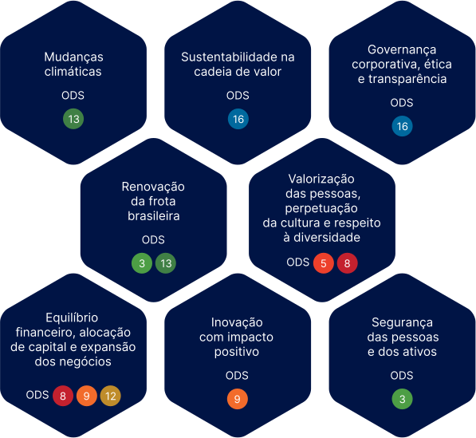

Materiality
This report is based on leading ESG matters, mapped out according to reference industry guidelines.
By way of this Integrated Annual Report, SIMPAR is disclosing to its investors, clients, employees and partners a summary of its results, investments and strategic projects in 2021.
This web version summarizes the content of the full document (to view click here), built around our various guidelines and methodologies:
- Standards of the Global Reporting Initiative (GRI)
- Integrated Reporting Framework (
), published by Value Reporting Foundation (VRF) - VRF's SASB standards
- Recommendations of the Task Force on Climate-Related Financial Disclosures (TCFD)
- CDP Data, Disclosure Insight Action
- International Financial Reporting Standards (IFRS)
- Sustainable Development Goals and the United Nations’ Global Compact.
SIMPAR has eight material sustainability topics, defined after the process of identification, prioritization, analysis and validation in conjunction with employees, leaders, investors, directors, consulting internal documents and sector studies.
Learn about our topics and how they relate to the UN's SDGs.
